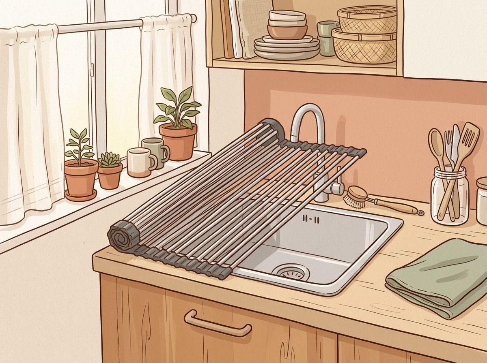

水切りラックの選び方
狭いキッチンで置き場所に困らない3つのポイント
シンクが小さい、調理台が狭い。そんなキッチンだと、水切りラックはサイズ選びで失敗しがちです。置き方のタイプごとに特徴を整理して、自分の家に合う一台を選ぶための目安をまとめました。
この記事にはアフィリエイト広告（楽天アフィリエイト）を含みます。価格・レビューは販売ページの情報です。
- 置き場所から逆算するタイプ選びの考え方
- 伸縮・折りたたみなど可変式の使い勝手
- 水の行き先と洗う量に合う容量の見方
HOW TO CHOOSE選び方のポイント
1まず「どこに置くか」を決める
シンクの幅を測り置き場所から逆算する
水切りラックは、調理台に置くタイプ、シンクに渡すタイプ、シンク上に突っ張るタイプなどがあります。調理スペースを削りたくないならシンクをまたぐタイプ、逆に高さが気になる賃貸なら低いタイプ、と置き場所から逆算すると絞り込みやすくなります。設置前にシンクの幅と奥行きを測っておくと安心です。
2伸縮・折りたたみで融通がきくか
小さくなる可変式は狭い家で長く使える
狭い家では「使わないときに小さくなる」ことが大きな差になります。シンク幅に合わせて伸縮するタイプ、洗い物が少ない日はスライドで縮められるタイプ、マットのように畳めるタイプなど、可変式なら引っ越しや模様替えのあとも使い続けやすいです。商品ごとに対応するシンク幅が決まっているので、そこは必ず確認を。
3水の行き先とお手入れのしやすさ
水がシンクへ流れる構造だと手間が減る
受け皿に水が溜まるタイプは、毎回水を捨てる手間がかかります。傾斜トレーでシンクへ流れる構造や、シンクに直接水が落ちる構造なら、その手間が減ります。トレーが取り外して洗えるか、素材がステンレスなど錆びにくいものかも、長く使う上でのチェックポイントです。
4洗うものの量と種類に合っているか
耐荷重と対応サイズで必要容量を確かめる
一人暮らしでコップと小皿が中心なのか、家族分の食器や鍋まで載せるのかで必要な容量は変わります。水筒やボトル類が多い家なら専用スタンドを分けたほうが乾きやすいことも。耐荷重や対応サイズの記載を見て、普段よく洗うものが収まるか確かめておきましょう。
PICKSタイプ別の候補
| タイプ | 価格の目安 | こんな人に |
|---|---|---|
| 渡し型 | 3,999円 | 調理台を広く使いたい一人暮らし・少人数世帯に |
| 折りたたみ | 1,900円 | 常設は避けたい、出し入れして使いたい人に |
| 突っ張り | 10,800円 | シンク上の空間ごと収納にしたい家族世帯に |
| スタンド型 | 3,850円 | 水筒やボトルの置き場所に困っている人に |
| プレート | 3,190円 | 食洗機と併用、少量の手洗い食器を乾かしたい人に |
伸縮式 シンク渡しステンレス水切りラック
- 幅約42〜62cmに伸縮して設置できる
- 水がシンクへ直接落ちる渡しタイプ
- 18-8ステンレス製・箸立て付き
こんな人に：調理台を広く使いたい一人暮らし・少人数世帯に
3,999円レビュー4,720件 ★4.732026/09/30時点・価格は変わることがあります
楽天で見る ↗折りたたみシリコン水切りマット
- 使わないときは畳んで収納できる
- スチール芯材入りで耐荷重は大約18kg
- 大・小・コーナーの3タイプから選べる
こんな人に：常設は避けたい、出し入れして使いたい人に
1,900円レビュー3,971件 ★4.692026/09/30時点・価格は変わることがあります
楽天で見る ↗突っ張り式 シンク上2段水切りラック
- 高さ約70〜110cmまで無段階で伸縮
- 浅型・深型バスケットと棚板付き
- 排水トレーは左右付け替え可能
こんな人に：シンク上の空間ごと収納にしたい家族世帯に
10,800円レビュー3,285件 ★4.372026/09/30時点・価格は変わることがあります
楽天で見る ↗ワイドジャグボトルスタンド
- 500mL〜2Lのボトルを立て掛けて乾かす
- スタンドと水切りトレーの2段構造
- 幅約32×奥行12×高さ17cmのサイズ
こんな人に：水筒やボトルの置き場所に困っている人に
3,850円レビュー6,972件 ★4.772026/09/30時点・価格は変わることがあります
楽天で見る ↗珪藻土ドライングプレート A4サイズ
- 調湿性のあるナノテク素材で水分を吸収
- A4サイズでちょっとした隙間に置ける
- カゴを置かないフラットなキッチン向き
こんな人に：食洗機と併用、少量の手洗い食器を乾かしたい人に
3,190円レビュー2,385件 ★4.582026/09/30時点・価格は変わることがあります
楽天で見る ↗迷ったら、まずシンクの幅と「毎日何を洗うか」をメモするところから。置き場所が決まれば、タイプは自然と絞れてきます。